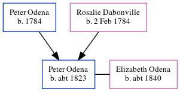

Peter Odena c1823 -
[ Home ] | [ Calendar ] | [ Surnames Index ] | [ Census Index ] | [ Family History ]The child of Peter Odena and Rosalie Dabonville, Peter Odena, the four times great-uncle of Michele Copp (née Phillips), was born in , South Carolina, USA c. 18231,2. He and was married to Elizabeth Odena.
During his life, he was living in St Andrews, Charleston, South Carolina, USA in 18501; and in Christ Church, South Carolina in 18802.
He died in South Carolina, USA.
Parents
- Peter was born in 1784
- Rosalie was born on Feb 2, 1784
Citations
- 1850 United States Federal Census Online publication - Provo, UT, USA: The Generations Network, Inc., 2005.Original data - United States of America, Bureau of the Census. Seventh Census of the United States, 1850. Washington, D.C.: National Archives and Records Administration, 1850. M432,
- 1880 United States Federal Census Online publication - Provo, UT, USA: The Generations Network, Inc., 2005. 1880 U.S. Census Index provided by The Church of Jesus Christ of Latter-day Saints © Copyright 1999 Intellectual Reserve, Inc. All rights reserved. All use is subject to the limite (Marital Status: Married; Relation to Head: Self)
Family Tree
Generated by ged2site. Last updated on Jun 6, 2024